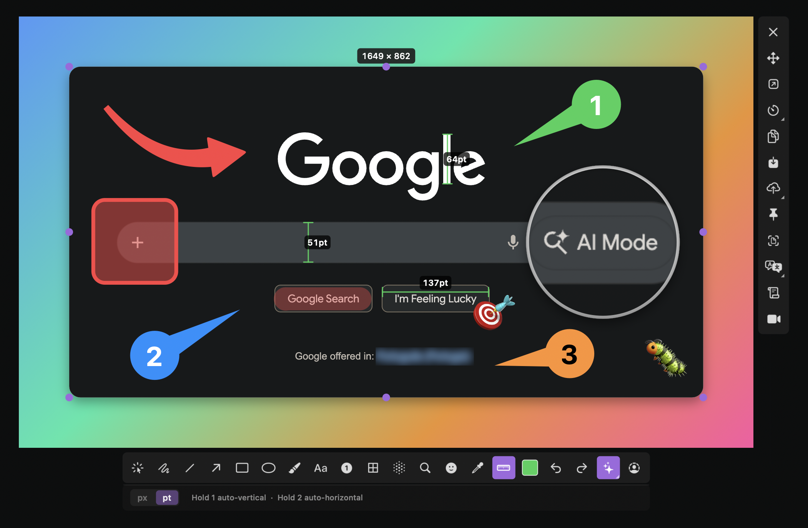

SEO 메타 정보
| 항목 | 내용 |
|---|---|
| Title (H1) | macshot: 맥에서 CleanShot X 대안 찾는다면, 무료 오픈소스 스크린샷 도구 |
| Meta Description | macshot은 macOS에서 스크린샷, 주석, 화면 녹화, OCR, 스크롤 캡처까지 지원하는 무료 오픈소스 도구입니다. CleanShot X 대안을 찾는 분들에게 잘 맞습니다. |
| URL Slug | macshot-macos-screenshot-tool |
| Category | AI도구 |
| Tags | macshot, macOS, 스크린샷, 화면녹화, OCR, 오픈소스, CleanShot X |
최근 Reddit의 사이드프로젝트 커뮤니티에서 꽤 눈에 띄는 도구 하나를 봤습니다. 이름은 macshot. 한마디로 정리하면 맥에서 스크린샷 캡처, 주석, 화면 녹화, OCR, 스크롤 캡처까지 한 번에 처리할 수 있는 무료 오픈소스 도구입니다.
유료 앱인 CleanShot X를 써본 분이라면 바로 감이 올 텐데요. “어? 이 정도 기능이면 대안으로 충분히 써볼 만한데?”라는 생각이 드는 도구입니다. 특히 블로그 이미지 만들기, 강의자료 준비, 사용법 안내 이미지 제작, 버그 리포트 작성처럼 화면을 자주 캡처하고 설명까지 덧붙이는 작업이 많은 분들에게 잘 맞습니다.
macshot이 눈에 띄는 이유
macshot의 가장 큰 장점은 기능이 많다는 점보다도, 작업 흐름이 끊기지 않게 설계되어 있다는 점입니다.
스크린샷 도구를 쓸 때 보통 이런 흐름이 생기죠.
- 화면 캡처
- 다른 앱에서 주석 추가
- 다시 저장
- 필요하면 업로드
그런데 macshot은 이걸 한 번에 줄여줍니다. 캡처하고, 바로 화살표와 텍스트를 넣고, 흐림 처리하고, 복사하거나 저장하고, 필요하면 업로드까지 이어집니다. 이런 종류의 도구는 “기능 수”보다 손에 익었을 때 얼마나 빠르게 끝나느냐가 중요한데, macshot은 그 방향을 잘 잡은 느낌입니다.
핵심 기능 요약
1. 캡처와 주석을 한 흐름으로 처리
캡처 후 바로 다음 작업으로 이어지는 것이 좋습니다.
- 화살표
- 사각형/원
- 텍스트 입력
- 블러/픽셀화
- 번호 마커
- 이모지/스탬프
즉, 블로그 튜토리얼 이미지나 강의용 설명 자료를 만들 때 별도 편집 툴을 열지 않아도 되는 경우가 많습니다.
2. 화면 녹화도 가능
스크린샷만 되는 것이 아니라 화면 녹화도 됩니다.
- MP4 녹화
- GIF 녹화
- 시스템 오디오 지원
- 마이크 입력 지원
- 녹화 후 기본 편집(트리밍)
짧은 사용법 영상, 제품 데모, 수업용 설명 영상 만들 때 꽤 실용적입니다.
3. 스크롤 캡처 지원
긴 웹페이지나 문서를 캡처해야 할 때 스크롤 캡처는 정말 중요합니다. macshot은 선택한 영역을 기준으로 스크롤하면서 하나의 긴 이미지로 이어 붙이는 기능을 제공합니다.
이건 블로그 글 소개, 서비스 비교표 캡처, 긴 문서 설명 이미지 제작할 때 특히 유용합니다.
4. OCR 텍스트 추출
이미지 안의 글자를 텍스트로 뽑아내는 OCR 기능도 들어 있습니다.
- 이미지 속 문장 추출
- 여러 언어 자동 인식
- 복사 후 바로 재활용 가능
수업 자료 캡처 후 텍스트만 따로 옮기거나, 화면에 보이는 내용을 빠르게 정리할 때 시간을 줄여줍니다.
5. 개인정보 마스킹
생각보다 중요한 기능입니다. 스크린샷을 공유할 때 이메일, 전화번호, API 키, 개인 정보가 그대로 노출되는 경우가 많죠.
macshot은 이런 민감한 정보를 가리는 기능을 강조하고 있습니다.
- 블러
- 픽셀화
- 솔리드 가림
- 자동 PII 감지 기반 마스킹
교육 자료, 업무 자동화 튜토리얼, 서비스 사용법 포스트를 작성할 때 특히 필요합니다.
6. 예쁘게 보정하는 Beautify 기능
그냥 캡처만 하는 도구가 아니라, 보여주기 좋은 이미지를 만드는 기능도 있습니다.
- macOS 윈도우 프레임 스타일
- 그림자 효과
- 그라데이션 배경
- 여백/모서리 조절
이 기능은 블로그 대표 이미지, 프레젠테이션 자료, SNS 카드형 이미지에 잘 어울립니다.
어떤 분들에게 잘 맞을까?
제가 보기에는 아래 사용자에게 특히 잘 맞습니다.
이런 분들께 추천
- 맥에서 유료 스크린샷 앱이 부담스러운 분
- 블로그용 설명 이미지를 자주 만드는 분
- 강의자료나 수업용 캡처를 자주 준비하는 선생님
- 버그 리포트나 사용법 문서를 자주 만드는 개발자/기획자
- 화면 녹화와 캡처를 한 도구로 통합하고 싶은 분
특히 코난쌤처럼 블로그 콘텐츠, 교육 자료, 도구 튜토리얼을 자주 만드는 분들에게는 꽤 잘 맞는 방향의 앱입니다.
무료인가요? 라이선스는?
네. 현재 공개된 정보 기준으로 무료 오픈소스입니다.
- 공식 사이트: Free and open source forever
- GitHub 라이선스: GPLv3
즉, 적어도 지금 기준으로는 “좋은 기능 몇 개는 유료 잠금” 같은 구조가 아니라, 오픈소스 프로젝트로 운영되는 점이 분명한 장점입니다.
설치 방법
Homebrew를 쓰는 분이라면 아래처럼 설치할 수 있습니다.
brew install sw33tlie/macshot/macshot또는 GitHub Releases에서 .dmg를 받아 설치할 수도 있습니다.
- GitHub: https://github.com/sw33tLie/macshot
- 공식 사이트: https://macshot.io
블로그나 글에서 넣기 좋은 이미지 구성
이 도구를 소개할 때는 아래 순서로 이미지를 넣으면 이해가 쉽습니다.
1. 대표 화면 이미지
가장 먼저 캡처 + 주석 툴바가 함께 보이는 메인 프리뷰 이미지를 넣는 것이 좋습니다.
- 도구 성격이 바로 전달됩니다.
- “스크린샷 앱”이라는 설명보다 이미지 한 장이 훨씬 빠릅니다.
2. 스크롤 캡처 예시
긴 페이지를 한 장으로 이어 붙인 예시가 있다면 꼭 넣는 것이 좋습니다.
- 차별점이 분명합니다.
- 튜토리얼/블로그 작성자에게 바로 와닿습니다.
3. Beautify 결과 이미지
단순 캡처가 아니라 결과물이 예쁘게 나온다는 점을 보여줄 수 있습니다.
- SNS 공유용
- 블로그 삽입용
- 발표자료용
이 세 가지 포인트가 함께 보이면, “그냥 캡처 앱”이 아니라 콘텐츠 제작 도구처럼 보입니다.
제가 본 관점에서 macshot의 포지션
이 도구는 단순히 “무료 대안”에서 끝나지 않습니다. 오히려 이런 메시지로 소개하는 게 좋습니다.
macshot은 맥에서 스크린샷, 주석, 화면 녹화, OCR, 스크롤 캡처까지 한 번에 처리할 수 있는 무료 오픈소스 도구입니다. CleanShot X 같은 유료 앱이 부담스러운 분들에게 특히 매력적인 선택지입니다.
이 한 문장만으로도 글의 방향이 잡힙니다.
아쉬운 점도 있을까?
있습니다. 아직은 아래 부분을 직접 써보며 확인해보는 게 좋습니다.
- 실제 한글 OCR 품질은 어느 정도인지
- 스크롤 캡처가 모든 앱/브라우저에서 안정적인지
- 화면 녹화 편집 기능이 어느 정도까지 실사용 가능한지
- 장기적으로 업데이트가 꾸준히 이어지는지
즉, 첫인상은 매우 좋지만, “완전히 검증된 대표 앱”이라고 단정하기보다는 지금 가장 흥미로운 무료 오픈소스 대안으로 소개하는 편이 균형 있습니다.
마무리
macshot은 맥 사용자, 특히 콘텐츠 제작자, 교사, 블로거, 개발자에게 꽤 매력적인 도구입니다.
- 무료
- 오픈소스
- 네이티브 앱
- 캡처 + 주석 + 녹화 + OCR + 스크롤 캡처 통합
이 조합은 생각보다 강합니다. 요즘처럼 도구 구독료가 계속 늘어나는 시기에는 더더욱 반갑고요.
맥에서 스크린샷 툴을 찾고 있었다면, macshot은 한 번 설치해서 써볼 가치가 충분합니다.
FAQ
Q1. macshot은 무료인가요?
네. 공식 사이트와 GitHub 기준으로 무료 오픈소스 도구입니다. 라이선스는 GPLv3로 공개되어 있습니다.
Q2. macshot은 어떤 운영체제에서 사용할 수 있나요?
macOS 12.3 이상에서 사용할 수 있습니다. Apple Silicon과 Intel 맥을 모두 지원한다고 안내되어 있습니다.
Q3. CleanShot X를 대체할 수 있나요?
사용 목적에 따라 충분히 대체 가능성이 있습니다. 특히 기본 캡처, 주석, 스크롤 캡처, OCR, 화면 녹화 기능을 중요하게 본다면 좋은 대안이 될 수 있습니다.
Q4. 교육 자료 만들 때도 괜찮을까요?
좋습니다. 설명용 화살표, 블러, 텍스트, 번호 마커, 스크롤 캡처, 녹화 기능이 있어 강의자료나 수업 자료 제작에 잘 맞습니다.
Q5. 설치는 어떻게 하나요?
Homebrew 사용 시 brew install sw33tlie/macshot/macshot 명령으로 설치할 수 있고, GitHub Releases에서 DMG 파일로도 설치할 수 있습니다.